РАЗРАБОТКА КОНФИГУРАЦИИ ДЛЯ УЧЕТА ТОВАРОВ.
ПРОДАЖА ТОВАРОВ
С РАЗНЫХ СКЛАДОВ
Сложность: ***
Теги: справочник, документ, регистр накопления, обработка проведения, запрос, схема компоновки данных
ЗАДАНИЕ
Заказчик просит разработать конфигурацию для учета товаров.
Суммовой учет не ведется. Взаиморасчеты с покупателями и поставщиками не ведутся.
Учет товаров ведется в разрезе складов.
В системе необходимо регистрировать два вида операций: «Поступление товара» и «Продажа товара».
При поступлении товара пользователь в табличной части указывает, какие товары и в каком количестве поступили в организацию. Нужно предусмотреть учет до граммов. В шапке документа выбирается склад, на который оформляется поступление.
При продаже товаров указывается, какие товары были проданы и в каком количестве, с какого склада. Склад, с которого списываются товары, выбирается для каждого товара в табличной части документа.
Продать товар «в минус» нельзя, в момент продажи следует проверять остаток товара.
Нужно построить «Отчет» по остаткам товаров следующего вида:
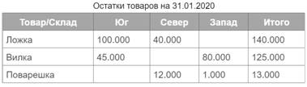
Отчет строится на конец дня, указанного пользователем. Особое внимание следует уделить последней секунде дня: документы, записанные на эту секунду, должны попадать в отчет.
Подготовка
q Создать новую информационную базу.
q Открыть информационную базу в режиме «Конфигуратор».
q Открыть окно конфигурации.
Подробнее о том, как это сделать, смотрите в Лабораторной работе № 2 (стр. 17).
Выполнение
«Суммовой учет не ведется. Взаиморасчеты с покупателями и поставщиками не ведутся».
Эта часть условия говорит нам о том, что никаких данных о суммах, валютах, покупателях и поставщиках в информационной системе хранить не нужно.
«Заказчик просит разработать конфигурацию для учета товаров. Учет товаров ведется в разрезе складов».
Появляется информация о тех объектах аналитики, которые нам понадобятся для решения поставленной задачи: товарах и складах. Для их реализации нам понадобятся справочники.
Определение
Справочник – это объект конфигурации, который хранит справочную информацию, например, перечень товаров или список сотрудников (более подробно про справочники можно прочитать здесь: https://v8.1c.ru/platforma/spravochniki/).
Добавим справочник «Товары».
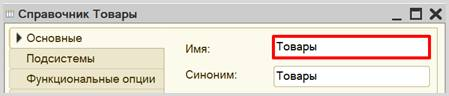
Добавим справочник «Склады».
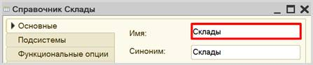
Откроем программу в режиме «1С:Предприятие» и добавим в каждый справочник несколько элементов.
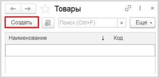
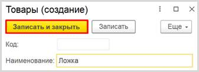
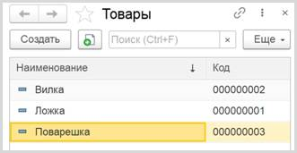
Аналогично добавьте элементы в справочник «Склады».
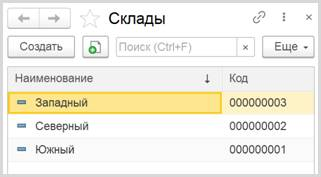
«В системе необходимо регистрировать поступление товара».
Для регистрации поступления товаров следует воспользоваться объектом конфигурации документ.
Определение
Документ – это объект конфигурации, хранящий информацию о каких-либо событиях, произошедших в «жизни» предприятия. Например, с помощью документа можно зарегистрировать (то есть сохранить данные документа для последующей обработки) продажу товаров или начисление зарплаты (подробнее про документы можно прочитать здесь: https://v8.1c.ru/platforma/dokumenty/).
Добавим новый документ «ПоступлениеТоваров».
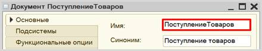
Для настройки структуры документа переходим на вкладку «Данные».
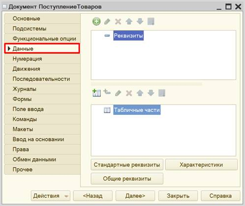
«При поступлении товара пользователь в табличной части указывает, какие товары и в каком количестве поступили в организацию. Нужно предусмотреть учет до граммов».
Добавим табличную часть.
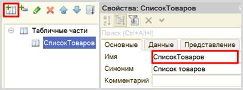
Теперь добавим два реквизита табличной части: «Товар» (тип – «СправочникСсылка.Товары») и «Количество» (тип – «Число»).

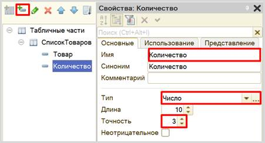
«В шапке документа выбираем склад, куда поступают товары».
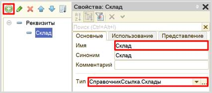
Сделаем данный реквизит обязательным для заполнения.
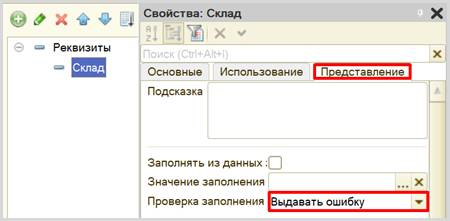
С помощью такой настройки пользователь не сможет сохранить документ, пока не заполнит поле «Склад».
Запустим режим «1С:Предприятие» и попробуем создать новый документ.
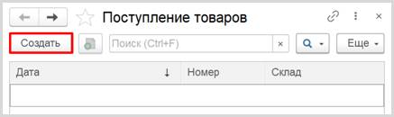
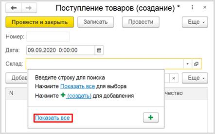
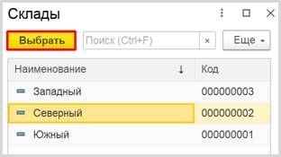
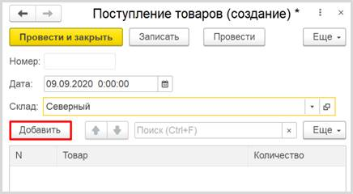
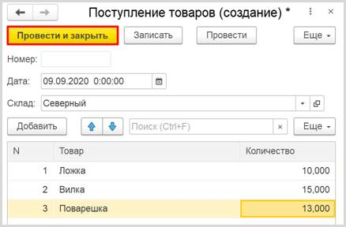
Теперь система способна регистрировать получение товаров на определенный склад.
Продажа товара осуществляется аналогично получению, следовательно, документ по структуре будет точно таким же, как документ «ПоступлениеТоваров».
Чтобы не тратить время на создание точно такого же документа, воспользуемся возможностью платформы создать новый документ копированием.
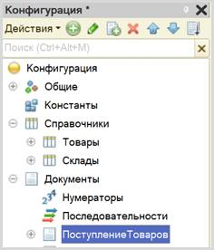
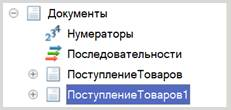
Получаем точную копию документа. Изменим имя документа на «ПродажаТоваров».
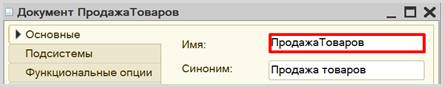
«При продаже товаров указывается, какие товары были проданы и в каком количестве, с какого склада. Склад, с которого списываются товары, выбирается для каждого товара в табличной части документа».
На вкладке «Данные» структура должна быть немного изменена.
Реквизит «Склад» следует скопировать в табличную часть. Перетаскивать реквизит нужно именно в список реквизитов табличной части.
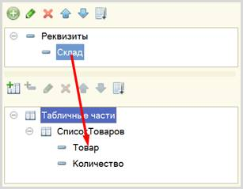
Теперь реквизит «Склад» из шапки документа нужно удалить.
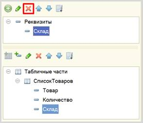
«Продать товар "в минус" нельзя, то есть в момент продажи следует проверять остаток товара».
Если создать новый документ «ПродажаТовара» и попытаться продать со склада больше товаров, чем на складе имеется в данный момент, то система не сможет этого предотвратить, поскольку учет остатков никак не ведется.
Для начала нужно каким-то образом вести подсчет остатков товаров на складах. Для этого нам потребуется регистр накопления.
Определение
Регистр накопления – это такая итоговая таблица, которая может автоматически считать какие-либо элементы, например, денежные средства, материалы (дополнительно про регистры накопления можно прочитать здесь: https://v8.1c.ru/platforma/registr-nakopleniya/).
Добавим новый регистр накопления «ОстаткиТоваровНаСкладах». Вид данного регистра – «Остатки».
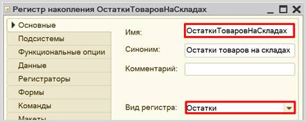
Как и в случае с документами, для формирования структуры переходим на вкладку «Данные».
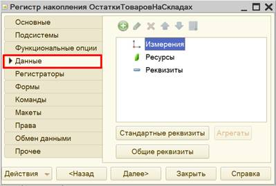
Структура регистра накопления отличается от структуры документа.
Заполнение данного окна проще всего начинать с добавления ресурса. Чтобы понять, что использовать в качестве ресурса, следует задать вопрос: «Что мы хотим накапливать/считать в данном регистре?». Мы хотим считать количество. Следовательно, количество и будет являться ресурсом. Тип данного реквизита – «Число». Точность – «3», поскольку в реквизит должно попадать количество с точностью до грамм.
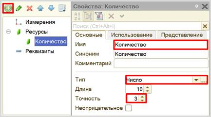
Чтобы разобраться с измерением, нужно понять, в разрезе чего мы хотим считать количество. Мы хотим считать количество (чего?) товаров в разрезе (чего?) складов. Значит, в качестве измерения необходимо добавить реквизиты «Товар» (тип – «СправочникСсылка.Товары») и «Склад» (тип – «СправочникСсылка.Склады»).
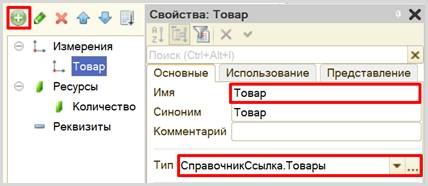
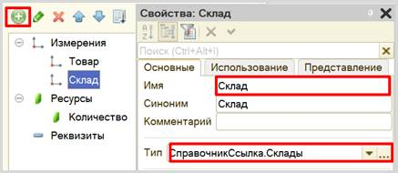
Чтобы регистр накопления заработал, следует сделать следующее:
1. Определить источники данных регистра (определить документы-регистраторы).
2. Описать, каким образом данные из документа-регистратора должны попадать в регистр.
В нашем случае, на количество товаров будут влиять оба созданных документа. Определим их в качестве документов-регистраторов на вкладке «Регистраторы».
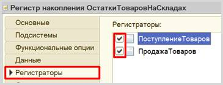
Далее для каждого из этих документов нужно описать процедуру копирования данных в регистр накопления.
Начнем с документа «ПоступлениеТоваров», откроем окно редактирования данного документа на вкладке «Движения». Воспользуемся конструктором движений.
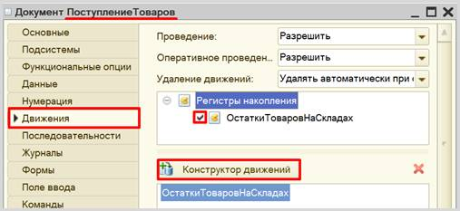
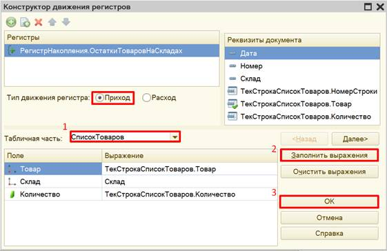
Окно конструктора движений состоит из нескольких областей:
q Левая верхняя область позволяет переключаться между регистрами (один документ может делать движения сразу в несколько разных регистров).
q Правая верхняя область описывает реквизиты документа-регистратора. Чтобы отобразить в данной области реквизиты табличной части, нужно выбрать ее в соответствующем поле.
q В нижней части окна описаны реквизиты регистра накопления. Следует заполнить поле «Выражение» реквизитами документа.
Поскольку получение товара должно увеличивать количество товаров на складе, то тип движения регистра необходимо выбрать «Приход». Регистр будет обозначаться знаком «+» (плюс).
Если все было сделано правильно, имена и типы реквизитов совпадают, то при нажатии на кнопку «Заполнить выражения» реквизиты регистра заполнятся автоматически. Если этого не произошло, то заполните поле «Выражение» вручную, путем выбора соответствующих реквизитов документа.
При нажатии на кнопку «ОК» система сформирует программный код, который при успешном проведении документа произведет движения в регистр накопления, то есть скопирует данные из документа в регистр накопления.
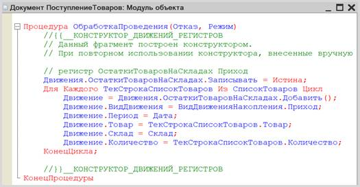
Аналогичные действия нужно проделать с документом «ПродажаТоваров».
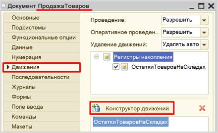
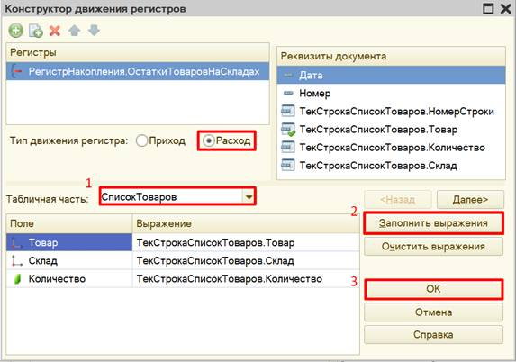
Продажа товара должна уменьшать количество товаров на складе, значит, тип движения регистра следует выбрать «Расход». Регистр будет обозначаться знаком «-» (минус).
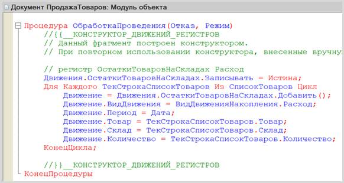
Откроем систему в режиме «1С:Предприятие» и проверим работу регистра накопления.
В первую очередь, необходимо перепровести (провести заново) созданный документ «Поступление товаров», а также создать и провести хотя бы один документ «Продажа товаров». Без проведения документов данные не будут скопированы в регистр накопления.
Обратите внимание, что на главной странице система не создала кнопку открытия регистра накопления. Это связано с тем, что все расчеты в регистрах накопления происходят в фоновом режиме, «за кадром», то есть пользователю о них знать не нужно вовсе. Поэтому по умолчанию регистры накопления настраивают так, чтобы пользователи не имели к ним доступа.
Но мы, будучи разработчиками, можем обратиться к любому объекту конфигурации. Для этого воспользуемся функциями для технического специалиста.
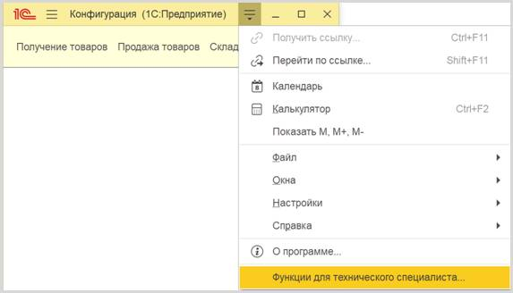
В открывшемся списке найдем созданный нами регистр накопления и откроем его.
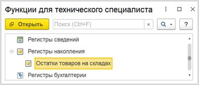
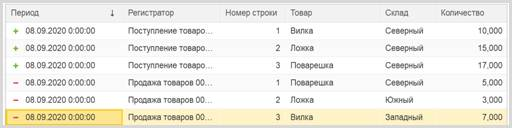
Регистр накопления является некоторой итоговой таблицей. Сюда заносятся данные из документов-регистраторов по определенным правилам.
Таким образом, мы соединили между собой созданные ранее документы:
q документ «ПоступлениеТоваров» увеличивает количество товаров на складах;
q документ «ПродажаТоваров», наоборот, его уменьшает;
q информация обо всех движениях товаров дублируется в регистр накопления.
«Продать товар "в минус" нельзя, то есть в момент продажи следует проверять остаток товара».
К сожалению, регистра накопления недостаточно для того, чтобы вести учет отрицательных остатков. Необходимо описать алгоритм работы документа «ПродажаТоваров».
Отроем модуль объекта документа «ПродажаТоваров» и дополним процедуру «ОбработкаПроведения».
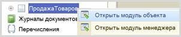
Проверять остатки товаров будем следующим образом:
1. Сделаем движение данных из документа в регистр накопления.
2. Проверим, появились ли в регистре остатки, значение которых меньше нуля (то есть отрицательные).
3. Если есть отрицательные остатки, то отменим сделанное движение в регистр накопления и выведем пользователю сообщение об ошибке.
Чтобы сделать движение данных их документа в регистр накопления, допишем после окончания цикла строку «Движения.Записать();». Метод записывает только те движения документа, у которых установлен флаг «Записывать», при этом флаг в итоге снимается, что не приводит к повторной записи движений по окончании транзакции проведения. И главное, «Движения.Записать();» всегда записывают движения в том порядке, в котором таблицы указаны в дереве метаданных, что на порядок уменьшает шансы взаимных блокировок, ведь все транзакции в одинаковом порядке блокируют таблицы.
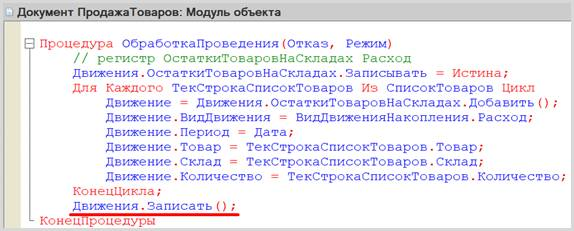
Теперь, когда движение было сделано, можно обратиться к данным регистра накопления.
Чтобы это сделать, воспользуемся конструктором запроса с обработкой результата. Этот конструктор можно открыть из контекстного меню щелчком правой кнопки мыши по области модуля. Данный конструктор обязательно должен быть вызван внутри процедуры «ОбработкаПроведения».
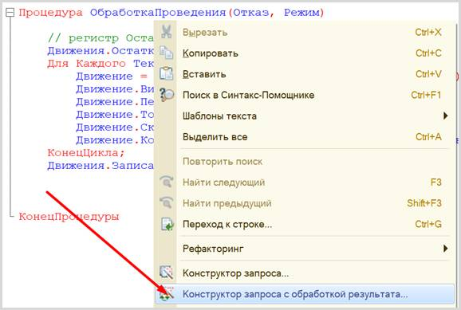
Соглашаемся с созданием нового запроса. Открывается окно конструктора запроса с обработкой результата. Переходим на вкладку «Таблицы и поля».
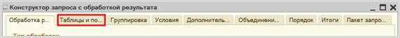
Открывшееся окно имеет три части:
q Часть слева отображает все объекты конфигурации, имеющиеся в нашей базе данных. Нужно выбрать лишь те объекты, из которых мы хотим получать данные.
q Посередине находятся таблицы – это выбранные нами объекты, откуда мы хотим получать данные для конкретного запроса.
q Справа поля – это те значения (поля), которые мы хотим получить.
Данные будем брать не из регистра накопления напрямую, а из виртуальной таблицы, которую создает этот регистр автоматически. Данная виртуальная таблица способна обработать основную таблицу и самостоятельно посчитать остатки товаров.
Чтобы перенести данные из одного окна в другое, просто перетащите
нужные поля с помощью мыши, либо воспользуйтесь стрелочками, расположенными
между окнами.
В результате данное окно должно быть заполнено следующим образом:
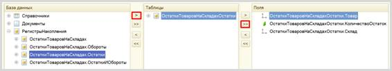
Переходим на вкладку «Условие» и добавим новое условие. Пусть в запрос попадут только данные с отрицательными остатками.
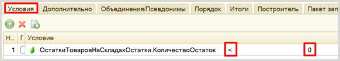
По окончании работы с данным конструктором нажимаем на кнопку «ОК». Конструктор выдаст предупреждение об ошибке, которое следует проигнорировать. Обратите внимание на текст запроса. Необходимо удалить знак амперсанта (&) перед нулем в условии.
Запрос должен выглядеть так:
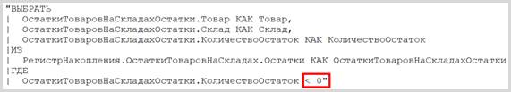
С помощью данного запроса из базы данных можно получить отрицательные остатки по всем товарам со всех складов. Но нам нет необходимости получать такую большую выборку, нужно сузить запрос до склада, который указан в шапке документа и товаров, перечисленных в табличной части.
Откроем конструктор запроса. Для этого нужно щелкнуть в любом месте самого запроса (черный текст в двойных кавычках) правой кнопкой мыши и вызвать конструктор запроса.

Следует наложить условия на виртуальную таблицу регистра накопления.

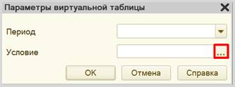
В открывшемся окне нужно написать следующее выражение:
Склад В (&МассивСкладов) И Товар В (&МассивТоваров)
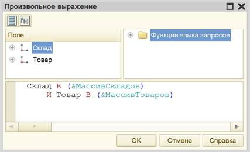
Нажмите на кнопку «ОК».
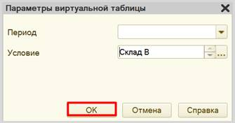
Данное условие поможет ограничить запрос по складам и товарам, которые указаны в табличной части документа.
Нажимаем на кнопку «ОК». Текст запроса изменился:
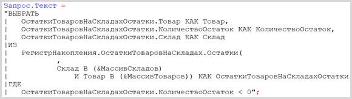
Мы добавили параметры. Теперь запрос будет проводить поиск только по конкретному складу и конкретному списку товаров. Осталось лишь указать этот склад и эти товары сразу после текста запроса.
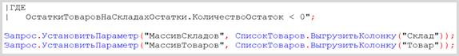
Ну, и последний шаг – выдать сообщение пользователю, если запрос вернул отрицательные остатки. В первую очередь, добавим блок условия сразу после определения параметров.
Внутрь цикла можно попасть только в том случае, если запрос пришел не пустой, то есть если были найдены отрицательные остатки. В таком случае нужно отменить проведение документа и выдать пользователю сообщение.
Код процедуры полностью должен выглядеть следующим образом:
Переходим в режим «1С:Предприятие».
Если у вас уже имеются документы «ПродажаТоваров», отмените их проведение. Для этого нажмите по документу в списке правой кнопкой мыши и выберите «Отменить проведение». Сделайте это для всех документов.
Проведите документы заново. Добавьте новый документ «Продажа товаров» так, чтобы хотя бы одного из вида товаров не хватало на одном из складов.
Если все было сделано правильно, и вы пытаетесь продать товаров больше, чем имеется на складе, то система выдаст ошибку:
«Нужно построить отчет по остаткам товаров».
Построим отчет. Для этого воспользуемся соответствующим объектом конфигурации.
Определение
Отчет – это такой объект конфигурации, который формирует данные в понятном для пользователя виде, например, в виде таблицы или диаграммы (подробнее про отчеты можно прочитать здесь: https://v8.1c.ru/platforma/otchet/).
Добавим отчет «ОтчетПоОстаткамТоваров».
Воспользуемся схемой компоновки данных.


Добавим новый запрос к базе данных.

Для формирования запроса воспользуемся конструктором запроса.

Открывается конструктор запроса. Эта вкладка имеет три части:
q Часть слева отображает все объекты конфигурации, имеющиеся в нашей базе данных. Нужно выбрать лишь те объекты, из которых мы хотим получать данные.
q Посередине находятся таблицы – это выбранные нами объекты, откуда мы хотим получать данные для конкретного отчета.
q Справа поля – это те значения (поля), которые мы хотим увидеть в отчете.
Данные будем брать не из регистра накопления напрямую, а из виртуальной таблицы, которую создает этот регистр автоматически. Данная виртуальная таблица позволит получить уже просуммированные значения по всем документам.
Чтобы перенести данные из одного окна в другое, просто перетащите
нужные поля с помощью мыши либо воспользуйтесь стрелочками, расположенными
между окнами.
В результате данное окно должно быть заполнено следующим образом:

Закрываем конструктор запроса, нажав на кнопку «ОК». Сформировался запрос.

Теперь система понимает, какие данные ей нужны для формирования отчета.
Переходим на вкладку «Ресурсы» и устанавливаем реквизит «КоличествоОстаток» в качестве ресурса: это позволит нам в отчете получать итоговые (просуммированные) значения.

«Отчет строится на конец дня, указанного пользователем. Особое внимание следует уделить последней секунде дня: документы, записанные на эту секунду, должны попадать в отчет».
Из условия следует, что отчет должен включать документы, записанные на последнюю секунду дня. При использовании стандартных методов такие документы в отчет попадать не будут. Поэтому нужно добавить новый параметр «ДатаОтчета» на соответствующей вкладке.
Чтобы у пользователя была возможность выбирать только даты, без указания секунд, нужно настроить формат редактирования параметра «ДатаОтчета».
После нажатия кнопки «ОК» нужно настроить стандартный параметр «Период» для корректного учета последней секунды дня:
q во-первых, этот параметр должен быть недоступен пользователю, так как носит вычислительный характер;
q во-вторых, для корректного расчета требуется написать выражение для стандартного параметра «Период»:
ДОБАВИТЬКДАТЕ(КОНЕЦПЕРИОДА(&ДатаОтчета, "ДЕНЬ"),"СЕКУНДА",1)
Сначала берется последний момент дня, указанного в параметре «ДатаОтчета», а затем прибавляется еще одна секунда, чтобы учитывались даже документы, проведенные за эту последнюю секунду.
Теперь переходим на вкладку «Настройки» для оформления внешнего вида отчета. Воспользуемся конструктором настроек отчета.
Построим отчет в виде таблицы.
Далее нужно выбрать ресурс, который будет отображен в таблице. В данном случае реквизит у нас всего один, его и выбираем.
На следующем шаге следует определить те реквизиты, которыми будут заполняться колонки и строки таблицы.
Ну, и на последнем шаге нужно установить сортировку. Установим сортировку по товарам по возрастанию (то есть по алфавиту).
Чтобы у пользователя была возможность выбирать день, на который он хочет построить отчет, нужно включить параметр «ДатаОтчета» в пользовательские настройки.
Отчет готов. Запустим систему в режиме «1С:Предприятие».
Добавьте еще несколько отчетов по получению товаров и продаже товаров, чтобы убедиться, что отчет работает корректно.
Поставленная задача решена.